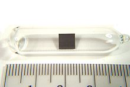
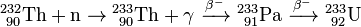

Thorium
|  | |||||||||||||||||||||||||||||||||||||||||||||||||||||||||||||||||||||||||||||||||||||||||||||||||||||||||||||||||||||||||||||||||||||||||||||||||||||||||||||||||||||||||||||||||||||||||||||||||||||||||||||||||||||||||||||||||||||
| General properties | |||||||||||||||||||||||||||||||||||||||||||||||||||||||||||||||||||||||||||||||||||||||||||||||||||||||||||||||||||||||||||||||||||||||||||||||||||||||||||||||||||||||||||||||||||||||||||||||||||||||||||||||||||||||||||||||||||||
|---|---|---|---|---|---|---|---|---|---|---|---|---|---|---|---|---|---|---|---|---|---|---|---|---|---|---|---|---|---|---|---|---|---|---|---|---|---|---|---|---|---|---|---|---|---|---|---|---|---|---|---|---|---|---|---|---|---|---|---|---|---|---|---|---|---|---|---|---|---|---|---|---|---|---|---|---|---|---|---|---|---|---|---|---|---|---|---|---|---|---|---|---|---|---|---|---|---|---|---|---|---|---|---|---|---|---|---|---|---|---|---|---|---|---|---|---|---|---|---|---|---|---|---|---|---|---|---|---|---|---|---|---|---|---|---|---|---|---|---|---|---|---|---|---|---|---|---|---|---|---|---|---|---|---|---|---|---|---|---|---|---|---|---|---|---|---|---|---|---|---|---|---|---|---|---|---|---|---|---|---|---|---|---|---|---|---|---|---|---|---|---|---|---|---|---|---|---|---|---|---|---|---|---|---|---|---|---|---|---|---|---|---|---|---|---|---|---|---|---|---|---|---|---|---|---|---|---|---|---|
| Name, symbol | thorium, Th | ||||||||||||||||||||||||||||||||||||||||||||||||||||||||||||||||||||||||||||||||||||||||||||||||||||||||||||||||||||||||||||||||||||||||||||||||||||||||||||||||||||||||||||||||||||||||||||||||||||||||||||||||||||||||||||||||||||
| Pronunciation | /ˈθɔəriəm/ THAWR-ee-əm |
||||||||||||||||||||||||||||||||||||||||||||||||||||||||||||||||||||||||||||||||||||||||||||||||||||||||||||||||||||||||||||||||||||||||||||||||||||||||||||||||||||||||||||||||||||||||||||||||||||||||||||||||||||||||||||||||||||
| Appearance | silvery, often with black tarnish | ||||||||||||||||||||||||||||||||||||||||||||||||||||||||||||||||||||||||||||||||||||||||||||||||||||||||||||||||||||||||||||||||||||||||||||||||||||||||||||||||||||||||||||||||||||||||||||||||||||||||||||||||||||||||||||||||||||
| Thorium in the periodic table | |||||||||||||||||||||||||||||||||||||||||||||||||||||||||||||||||||||||||||||||||||||||||||||||||||||||||||||||||||||||||||||||||||||||||||||||||||||||||||||||||||||||||||||||||||||||||||||||||||||||||||||||||||||||||||||||||||||
|
|||||||||||||||||||||||||||||||||||||||||||||||||||||||||||||||||||||||||||||||||||||||||||||||||||||||||||||||||||||||||||||||||||||||||||||||||||||||||||||||||||||||||||||||||||||||||||||||||||||||||||||||||||||||||||||||||||||
| Atomic number | 90 | ||||||||||||||||||||||||||||||||||||||||||||||||||||||||||||||||||||||||||||||||||||||||||||||||||||||||||||||||||||||||||||||||||||||||||||||||||||||||||||||||||||||||||||||||||||||||||||||||||||||||||||||||||||||||||||||||||||
| Standard atomic weight (±) | 232.0377(4)[1] | ||||||||||||||||||||||||||||||||||||||||||||||||||||||||||||||||||||||||||||||||||||||||||||||||||||||||||||||||||||||||||||||||||||||||||||||||||||||||||||||||||||||||||||||||||||||||||||||||||||||||||||||||||||||||||||||||||||
| Element category | actinide | ||||||||||||||||||||||||||||||||||||||||||||||||||||||||||||||||||||||||||||||||||||||||||||||||||||||||||||||||||||||||||||||||||||||||||||||||||||||||||||||||||||||||||||||||||||||||||||||||||||||||||||||||||||||||||||||||||||
| Group, block | group n/a, f-block | ||||||||||||||||||||||||||||||||||||||||||||||||||||||||||||||||||||||||||||||||||||||||||||||||||||||||||||||||||||||||||||||||||||||||||||||||||||||||||||||||||||||||||||||||||||||||||||||||||||||||||||||||||||||||||||||||||||
| Period | period 7 | ||||||||||||||||||||||||||||||||||||||||||||||||||||||||||||||||||||||||||||||||||||||||||||||||||||||||||||||||||||||||||||||||||||||||||||||||||||||||||||||||||||||||||||||||||||||||||||||||||||||||||||||||||||||||||||||||||||
| Electron configuration | [Rn] 6d2 7s2 | ||||||||||||||||||||||||||||||||||||||||||||||||||||||||||||||||||||||||||||||||||||||||||||||||||||||||||||||||||||||||||||||||||||||||||||||||||||||||||||||||||||||||||||||||||||||||||||||||||||||||||||||||||||||||||||||||||||
| per shell | 2, 8, 18, 32, 18, 10, 2 | ||||||||||||||||||||||||||||||||||||||||||||||||||||||||||||||||||||||||||||||||||||||||||||||||||||||||||||||||||||||||||||||||||||||||||||||||||||||||||||||||||||||||||||||||||||||||||||||||||||||||||||||||||||||||||||||||||||
| Physical properties | |||||||||||||||||||||||||||||||||||||||||||||||||||||||||||||||||||||||||||||||||||||||||||||||||||||||||||||||||||||||||||||||||||||||||||||||||||||||||||||||||||||||||||||||||||||||||||||||||||||||||||||||||||||||||||||||||||||
| Phase | solid | ||||||||||||||||||||||||||||||||||||||||||||||||||||||||||||||||||||||||||||||||||||||||||||||||||||||||||||||||||||||||||||||||||||||||||||||||||||||||||||||||||||||||||||||||||||||||||||||||||||||||||||||||||||||||||||||||||||
| Melting point | 2023 K (1750 °C, 3182 °F) | ||||||||||||||||||||||||||||||||||||||||||||||||||||||||||||||||||||||||||||||||||||||||||||||||||||||||||||||||||||||||||||||||||||||||||||||||||||||||||||||||||||||||||||||||||||||||||||||||||||||||||||||||||||||||||||||||||||
| Boiling point | 5061 K (4788 °C, 8650 °F) | ||||||||||||||||||||||||||||||||||||||||||||||||||||||||||||||||||||||||||||||||||||||||||||||||||||||||||||||||||||||||||||||||||||||||||||||||||||||||||||||||||||||||||||||||||||||||||||||||||||||||||||||||||||||||||||||||||||
| Density near r.t. | 11.724 g·cm−3 | ||||||||||||||||||||||||||||||||||||||||||||||||||||||||||||||||||||||||||||||||||||||||||||||||||||||||||||||||||||||||||||||||||||||||||||||||||||||||||||||||||||||||||||||||||||||||||||||||||||||||||||||||||||||||||||||||||||
| Heat of fusion | 13.81 kJ·mol−1 | ||||||||||||||||||||||||||||||||||||||||||||||||||||||||||||||||||||||||||||||||||||||||||||||||||||||||||||||||||||||||||||||||||||||||||||||||||||||||||||||||||||||||||||||||||||||||||||||||||||||||||||||||||||||||||||||||||||
| Heat of vaporization | 514 kJ·mol−1 | ||||||||||||||||||||||||||||||||||||||||||||||||||||||||||||||||||||||||||||||||||||||||||||||||||||||||||||||||||||||||||||||||||||||||||||||||||||||||||||||||||||||||||||||||||||||||||||||||||||||||||||||||||||||||||||||||||||
| Molar heat capacity | 26.230 J·mol−1·K−1 | ||||||||||||||||||||||||||||||||||||||||||||||||||||||||||||||||||||||||||||||||||||||||||||||||||||||||||||||||||||||||||||||||||||||||||||||||||||||||||||||||||||||||||||||||||||||||||||||||||||||||||||||||||||||||||||||||||||
vapor pressure
|
|||||||||||||||||||||||||||||||||||||||||||||||||||||||||||||||||||||||||||||||||||||||||||||||||||||||||||||||||||||||||||||||||||||||||||||||||||||||||||||||||||||||||||||||||||||||||||||||||||||||||||||||||||||||||||||||||||||
| Atomic properties | |||||||||||||||||||||||||||||||||||||||||||||||||||||||||||||||||||||||||||||||||||||||||||||||||||||||||||||||||||||||||||||||||||||||||||||||||||||||||||||||||||||||||||||||||||||||||||||||||||||||||||||||||||||||||||||||||||||
| Oxidation states | 4, 3, 2, 1 | ||||||||||||||||||||||||||||||||||||||||||||||||||||||||||||||||||||||||||||||||||||||||||||||||||||||||||||||||||||||||||||||||||||||||||||||||||||||||||||||||||||||||||||||||||||||||||||||||||||||||||||||||||||||||||||||||||||
| Electronegativity | Pauling scale: 1.3 | ||||||||||||||||||||||||||||||||||||||||||||||||||||||||||||||||||||||||||||||||||||||||||||||||||||||||||||||||||||||||||||||||||||||||||||||||||||||||||||||||||||||||||||||||||||||||||||||||||||||||||||||||||||||||||||||||||||
| Ionization energies | 1st: 587 kJ·mol−1 2nd: 1110 kJ·mol−1 3rd: 1930 kJ·mol−1 |
||||||||||||||||||||||||||||||||||||||||||||||||||||||||||||||||||||||||||||||||||||||||||||||||||||||||||||||||||||||||||||||||||||||||||||||||||||||||||||||||||||||||||||||||||||||||||||||||||||||||||||||||||||||||||||||||||||
| Atomic radius | empirical: 179.8 pm | ||||||||||||||||||||||||||||||||||||||||||||||||||||||||||||||||||||||||||||||||||||||||||||||||||||||||||||||||||||||||||||||||||||||||||||||||||||||||||||||||||||||||||||||||||||||||||||||||||||||||||||||||||||||||||||||||||||
| Covalent radius | 206±6 pm | ||||||||||||||||||||||||||||||||||||||||||||||||||||||||||||||||||||||||||||||||||||||||||||||||||||||||||||||||||||||||||||||||||||||||||||||||||||||||||||||||||||||||||||||||||||||||||||||||||||||||||||||||||||||||||||||||||||
| Miscellanea | |||||||||||||||||||||||||||||||||||||||||||||||||||||||||||||||||||||||||||||||||||||||||||||||||||||||||||||||||||||||||||||||||||||||||||||||||||||||||||||||||||||||||||||||||||||||||||||||||||||||||||||||||||||||||||||||||||||
| Crystal structure | face-centered cubic (fcc)
 |
||||||||||||||||||||||||||||||||||||||||||||||||||||||||||||||||||||||||||||||||||||||||||||||||||||||||||||||||||||||||||||||||||||||||||||||||||||||||||||||||||||||||||||||||||||||||||||||||||||||||||||||||||||||||||||||||||||
| Speed of sound thin rod | 2490 m·s−1 (at 20 °C) | ||||||||||||||||||||||||||||||||||||||||||||||||||||||||||||||||||||||||||||||||||||||||||||||||||||||||||||||||||||||||||||||||||||||||||||||||||||||||||||||||||||||||||||||||||||||||||||||||||||||||||||||||||||||||||||||||||||
| Thermal expansion | 11.0 µm·m−1·K−1 (at 25 °C) | ||||||||||||||||||||||||||||||||||||||||||||||||||||||||||||||||||||||||||||||||||||||||||||||||||||||||||||||||||||||||||||||||||||||||||||||||||||||||||||||||||||||||||||||||||||||||||||||||||||||||||||||||||||||||||||||||||||
| Thermal conductivity | 54.0 W·m−1·K−1 | ||||||||||||||||||||||||||||||||||||||||||||||||||||||||||||||||||||||||||||||||||||||||||||||||||||||||||||||||||||||||||||||||||||||||||||||||||||||||||||||||||||||||||||||||||||||||||||||||||||||||||||||||||||||||||||||||||||
| Electrical resistivity | 157 nΩ·m (at 0 °C) | ||||||||||||||||||||||||||||||||||||||||||||||||||||||||||||||||||||||||||||||||||||||||||||||||||||||||||||||||||||||||||||||||||||||||||||||||||||||||||||||||||||||||||||||||||||||||||||||||||||||||||||||||||||||||||||||||||||
| Magnetic ordering | paramagnetic[2] | ||||||||||||||||||||||||||||||||||||||||||||||||||||||||||||||||||||||||||||||||||||||||||||||||||||||||||||||||||||||||||||||||||||||||||||||||||||||||||||||||||||||||||||||||||||||||||||||||||||||||||||||||||||||||||||||||||||
| Young's modulus | 79 GPa | ||||||||||||||||||||||||||||||||||||||||||||||||||||||||||||||||||||||||||||||||||||||||||||||||||||||||||||||||||||||||||||||||||||||||||||||||||||||||||||||||||||||||||||||||||||||||||||||||||||||||||||||||||||||||||||||||||||
| Shear modulus | 31 GPa | ||||||||||||||||||||||||||||||||||||||||||||||||||||||||||||||||||||||||||||||||||||||||||||||||||||||||||||||||||||||||||||||||||||||||||||||||||||||||||||||||||||||||||||||||||||||||||||||||||||||||||||||||||||||||||||||||||||
| Bulk modulus | 54 GPa | ||||||||||||||||||||||||||||||||||||||||||||||||||||||||||||||||||||||||||||||||||||||||||||||||||||||||||||||||||||||||||||||||||||||||||||||||||||||||||||||||||||||||||||||||||||||||||||||||||||||||||||||||||||||||||||||||||||
| Poisson ratio | 0.27 | ||||||||||||||||||||||||||||||||||||||||||||||||||||||||||||||||||||||||||||||||||||||||||||||||||||||||||||||||||||||||||||||||||||||||||||||||||||||||||||||||||||||||||||||||||||||||||||||||||||||||||||||||||||||||||||||||||||
| Mohs hardness | 3.0 | ||||||||||||||||||||||||||||||||||||||||||||||||||||||||||||||||||||||||||||||||||||||||||||||||||||||||||||||||||||||||||||||||||||||||||||||||||||||||||||||||||||||||||||||||||||||||||||||||||||||||||||||||||||||||||||||||||||
| Vickers hardness | 295–685 MPa | ||||||||||||||||||||||||||||||||||||||||||||||||||||||||||||||||||||||||||||||||||||||||||||||||||||||||||||||||||||||||||||||||||||||||||||||||||||||||||||||||||||||||||||||||||||||||||||||||||||||||||||||||||||||||||||||||||||
| Brinell hardness | 390–1500 MPa | ||||||||||||||||||||||||||||||||||||||||||||||||||||||||||||||||||||||||||||||||||||||||||||||||||||||||||||||||||||||||||||||||||||||||||||||||||||||||||||||||||||||||||||||||||||||||||||||||||||||||||||||||||||||||||||||||||||
| CAS Registry Number | 7440-29-1 | ||||||||||||||||||||||||||||||||||||||||||||||||||||||||||||||||||||||||||||||||||||||||||||||||||||||||||||||||||||||||||||||||||||||||||||||||||||||||||||||||||||||||||||||||||||||||||||||||||||||||||||||||||||||||||||||||||||
| History | |||||||||||||||||||||||||||||||||||||||||||||||||||||||||||||||||||||||||||||||||||||||||||||||||||||||||||||||||||||||||||||||||||||||||||||||||||||||||||||||||||||||||||||||||||||||||||||||||||||||||||||||||||||||||||||||||||||
| Naming | after Thor, the Norse god of thunder | ||||||||||||||||||||||||||||||||||||||||||||||||||||||||||||||||||||||||||||||||||||||||||||||||||||||||||||||||||||||||||||||||||||||||||||||||||||||||||||||||||||||||||||||||||||||||||||||||||||||||||||||||||||||||||||||||||||
| Discovery | Jöns Jakob Berzelius (1829) | ||||||||||||||||||||||||||||||||||||||||||||||||||||||||||||||||||||||||||||||||||||||||||||||||||||||||||||||||||||||||||||||||||||||||||||||||||||||||||||||||||||||||||||||||||||||||||||||||||||||||||||||||||||||||||||||||||||
| Most stable isotopes | |||||||||||||||||||||||||||||||||||||||||||||||||||||||||||||||||||||||||||||||||||||||||||||||||||||||||||||||||||||||||||||||||||||||||||||||||||||||||||||||||||||||||||||||||||||||||||||||||||||||||||||||||||||||||||||||||||||
|
|||||||||||||||||||||||||||||||||||||||||||||||||||||||||||||||||||||||||||||||||||||||||||||||||||||||||||||||||||||||||||||||||||||||||||||||||||||||||||||||||||||||||||||||||||||||||||||||||||||||||||||||||||||||||||||||||||||
Thorium is a chemical element with symbol Th and atomic number 90. A radioactive actinide metal, thorium is one of only four radioactive elements that still occur in quantity in nature as a primordial element (the other three being bismuth, plutonium, and uranium).[a] It was discovered in 1828 by the Norwegian mineralogist Morten Thrane Esmark and identified by the Swedish chemist Jöns Jakob Berzelius, who named it after Thor, the Norse god of thunder.
A thorium atom has 90 protons and therefore 90 electrons, of which four are valence electrons. Thorium metal is silvery and tarnishes black when exposed to air. Thorium is weakly radioactive: all its known isotopes are unstable, with the six naturally occurring ones (thorium-227, 228, 230, 231, 232, and 234) having half-lives between 25.52 hours and 14.05 billion years. Thorium-232, which has 142 neutrons, is the most stable isotope of thorium and accounts for nearly all natural thorium, with the other five natural isotopes occurring only in traces: it decays very slowly through alpha decay to radium-228, starting a decay chain named the thorium series that ends at lead-208. Thorium is estimated to be about three to four times more abundant than uranium in the Earth's crust, and is chiefly refined from monazite sands as a by-product of extracting rare earth metals.
Thorium was once commonly used as the light source in gas mantles and as an alloying material, but these applications have declined due to concerns about its radioactivity. Thorium is also used as an alloying element in nonconsumable TIG welding electrodes. It remains popular as a material in high-end optics and scientific instrumentation; thorium and uranium are the only radioactive elements with major commercial applications that do not rely on their radioactivity. Thorium is predicted to be able to replace uranium as nuclear fuel in nuclear reactors, but only a few thorium reactors have yet been completed.
Contents
[hide]Characteristics[edit]
Physical[edit]
Thorium is a soft, paramagnetic, bright silvery radioactive actinide metal. In the periodic table, it is located to the right of the actinide actinium, to the left of the actinide protactinium and below the lanthanide cerium. Pure thorium is soft, very ductile, and can be cold-rolled, swaged, and drawn.[4]
The measured properties of thorium vary widely depending on the amount of impurities in the sample used: the major impurity is usually thorium dioxide (ThO2). The purest thorium specimens usually contain about a tenth of a percent of the dioxide.[4] Its density has been calculated to be 11.724 g/cm3, while experimental measurements give values between 11.5 and 11.66 g/cm3:[4] these values lie intermediate between those of its neighbours actinium (10.07 g/cm3) and protactinium (15.37 g/cm3), showing the continuity of trends across the actinide series.[4] However, thorium's melting point of 1750 °C is above both that of actinium (1227 °C) and that of protactinium (1562±15 °C): the melting points of the actinides do not have a clear dependence on their number of f electrons, although there is a smooth trend downward from thorium to plutonium where the number of f electrons increases from zero to six.[5] Thorium is a soft metal, having a bulk modulus of 54 GPa, comparable to those of tin and scandium. The hardness of thorium is similar to that of soft steel, so heated pure thorium can be rolled in sheets and pulled into wire.[5] Thorium becomes superconductive below 1.40 K.[4][b] Nevertheless, while thorium is nearly half as dense as uranium and plutonium, it is harder than either of them.[5] Among the actinides, thorium has the highest melting point and second-lowest density (second only to actinium).[4] The thermal expansion, electrical and thermal conductivities of thorium, protactinium, and uranium are comparable and are typical of post-transition metals.[6]
Thorium can also form alloys with many other metals. With chromium and uranium, it forms eutectic mixtures, and thorium is completely miscible in both solid and liquid states with its lighter congener cerium.[4]
Chemical[edit]
Thorium is a highly reactive metal. At standard temperature and pressure, thorium is slowly attacked by water, but does not readily dissolve in most common acids, the exception being hydrochloric acid.[4][7] It dissolves in concentrated nitric acid containing a small amount of catalytic fluoride or fluorosilicate ions;[4][8] if these are not present, passivation can occur.[4] At high temperatures, it is easily attacked by oxygen, hydrogen, nitrogen, the halogens, and sulfur. It can also form binary compounds with carbon and phosphorus.[4] When thorium dissolves in hydrochloric acid, a black residue, probably ThO(OH,Cl)H, is left behind.[4]
Finely divided thorium metal presents a fire hazard due to its pyrophoricity and must therefore be handled carefully.[4] When heated in air, thorium turnings ignite and burn brilliantly with a white light to produce the dioxide. In bulk, the reaction of pure thorium with air is slow, although corrosion may eventually occur after several months; most thorium samples are however contaminated with varying degrees of the dioxide, which greatly accelerates corrosion.[4] Such samples slowly tarnish in air, becoming gray and finally black.[4]
The most important oxidation state of thorium is +4, represented in compounds such as thorium dioxide (ThO2) and thorium tetrafluoride (ThF4), although some compounds are known with thorium in lower formal oxidation states.[9][10][11] Owing to thorium(IV)'s lack of electrons on 6d and 5f orbitals, the tetravalent thorium compounds are colorless.[5]
In aqueous solution, thorium occurs exclusively as the tetrapositive aqua ion [Th(H2O)9]4+, which has tricapped trigonal prismatic molecular geometry:[12][13] at pH < 3, the solutions of thorium salts are dominated by this cation.[12] The Th–O bond distance is (245 ± 1) pm, the coordination number of Th4+ is (10.8 ± 0.5), the effective charge is 3.82 and the second coordination sphere contains 13.4 water molecules.[12] The Th4+ ion is relatively large and is the largest of the tetrapositive actinide ions, and depending on the coordination number can have a radius between 0.95 and 1.14 Å. As a result, thorium salts have a weak tendency to hydrolyze, weaker than that of many multiply charged ions such as Fe3+.[12] The distinctive ability of thorium salts is their high solubility, not only in water, but also in polar organic solvents.[5]
Thorium has been shown to activate carbon–hydrogen bonds, forming unusual compounds. Thorium atoms can also bond to more atoms than any other element: for instance, in the compound thorium aminodiboranate, thorium has a coordination number of fifteen.[14]
Atomic[edit]
A thorium atom has 90 electrons, of which four are valence electrons. Four atomic orbitals are theoretically available for the valence electrons to occupy: 5f, 6d, 7s, and 7p. However, the 7p orbital is greatly destabilized and hence it is not occupied in the ground state of any thorium ion.[15] Despite thorium's position in the f-block of the periodic table, it has an anomalous [Rn]6d27s2 electron configuration in the ground state. However, in metallic thorium, the [Rn]5f16d17s2 configuration is a low-lying excited state and hence the 5f orbitals contribute, existing in a rather broad energy band.[15]
The ground-state electron configurations of thorium ions are as follows: Th+, [Rn]6d27s1; Th2+, [Rn]5f16d1;[c] Th3+, [Rn]5f1; Th4+, [Rn]. This shows the increasing stabilization of the 5f orbital as ion charge increases; however, this stabilization is insufficient to chemically stabilize Th3+ with its lone 5f valence electron, and therefore the stable and most common form of thorium in chemicals is Th4+ with all four valence electrons lost, leaving behind an inert core of inner electrons with the electron configuration of the noble gas radon.[15][16] The first ionization potential of thorium was measured to be (6.08 ± 0.12) eV in 1974;[17] more recent measurements have refined this to 6.3067 eV.[18]
Isotopes[edit]
Although thorium has 6 naturally occurring isotopes, none of these isotopes are stable; however, one isotope, 232Th, is relatively stable, with a half-life of 14.05 billion years, considerably longer than the age of the earth, and even slightly longer than the generally accepted age of the universe (about 13.8 billion years).[d] This isotope is the longest-lived of all isotopes with more than 83 protons and makes up nearly all natural thorium. As such, thorium is most commonly considered to be mononuclidic.[19][20][21] However, in deep seawaters the isotope 230Th becomes significant enough that IUPAC reclassified thorium as a binuclidic element in 2013.[22] In fact, uranium ores with low thorium concentrations can be purified to produce gram-sized thorium samples of which over a quarter is the 230Th isotope.[23] Thorium has a characteristic terrestrial isotopic composition, consisting largely of 232Th and a little 230Th, and thus an atomic mass can be given, which is 232.0377(4) u.[22]
232Th is the longest-lived isotope in the 4n decay chain which includes isotopes with a mass number divisible by 4, begins with the alpha decay of 232Th to 228Ra,[e] and terminates at stable 208Pb, and its longevity means that the isotopes in its decay chain still exist in nature as radiogenic nuclides despite their short half-lives.[19][f][g] As such, natural thorium samples can be chemically purified to extract its useful daughter nuclides, such as lead-212 (212Pb), which is used in nuclear medicine for cancer therapy.[24][25]
Thirty radioisotopes have been characterized, which range in mass number from 209[26] to 238.[23] The most stable of them (after 232Th) are 230Th with a half-life of 75,380 years, 229Th with a half-life of 7,340 years, 228Th with a half-life of 1.92 years, 234Th with a half-life of 24.10 days, and 227Th with a half-life of 18.68 days: all of these isotopes except 229Th occur in nature as trace radioisotopes due to their presence in the decay chains of 232Th, 235U, and 238U. All of the remaining thorium isotopes have half-lives that are less than thirty days and the majority of these have half-lives that are less than ten minutes. The isotope 229Th has a nuclear isomer (or metastable state) with a remarkably low excitation energy,[27] recently measured to be (7.6 ± 0.5) eV.[28]
In the early history of the study of radioactivity, the different natural isotopes of thorium were given different names. In this scheme, 227Th was named radioactinium (RdAc), 228Th radiothorium (RdTh), 230Th ionium (Io), 231Th uranium Y (UY), 232Th thorium (Th), and 234Th uranium X1 (UX1).[23] When it was realized that all of these are isotopes of thorium, many of these names fell out of use, and "thorium" came to refer to all isotopes, not just 232Th.[23] However, the name ionium is still encountered for 230Th in the context of ionium-thorium dating.[29][30]
Different isotopes of thorium behave identically chemically, but do have slightly differing physical properties: for example, the densities of 228Th, 229Th, 230Th, and 232Th in g·cm−3 are respectively expected to be 11.524, 11.575, 11.626, and 11.727.[31] The isotope 229Th is expected to be fissionable with a bare critical mass of 2839 kg, although with steel reflectors this value could drop to 994 kg.[31] While 232Th, the most common thorium isotope, is not fissionable, it is fertile as it can be converted to fissile 233U using neutron capture.[31][32]
| Thorium allotrope | α (measured at 0 °C) | β (measured at 1450 °C) | high-pressure (measured at 102 GPa) |
|---|---|---|---|
| Transition temperature | (α→β) 1360 °C | (β→liquid) 1750 °C | high pressure |
| Symmetry | Face-centered cubic | Body-centered cubic | Body-centered tetragonal |
| Density (g·cm−3) | 11.724 | 11.724 | unknown |
| Lattice parameters (pm) | a = 508.42 | a = 411 | a = 228.2, c = 441.1 |
History[edit]
Discovery[edit]

{kind=link}
{kind=link}
In 1815, the Swedish chemist Jöns Jakob Berzelius analyzed a mineral from a copper mine in Falun. Assuming that a new element was contained in the mineral, he named the supposed element "thorium" after Thor, the Norse god of thunder. However, the mineral later proved to actually be an yttrium mineral, primarily composed of yttrium orthophosphate.[32] As the yttrium in this mineral was initially mistaken as being a new element, the mineral was named xenotime from the Greek words κενός (vain) and τιμή (honor).[33][34]
In 1828, Morten Thrane Esmark found a black mineral on Løvøya island, Norway, and gave a sample to his father, Jens Esmark, a noted mineralogist. The elder Esmark was not able to identify it and sent a sample to the Swedish chemist Jöns Jakob Berzelius for examination. Berzelius determined that it contained a new element.[32] He published his findings in 1829.[35][36][37] Berzelius reused the name of the previous supposed element discovery.[35][38] Thus, he named the source mineral thorite, which has the chemical composition (Th,U)SiO4.[32]
Subsequent developments[edit]
In Dmitri Mendeleev's 1869 periodic table, thorium and the rare earth elements were placed outside the main body of the table, at the end of each vertical period after the alkaline earth metals. This reflected the belief at that time that thorium and the rare earth metals were divalent.[h] With the later recognition that the rare earths were mostly trivalent and thorium was tetravalent, Mendeleev moved cerium and thorium to group IV in 1871, which contained the modern carbon group, titanium group, cerium, and thorium, because their maximum oxidation state was +4.[39][40] While cerium was soon removed from the main body of the table and placed in a separate lanthanide series, it was not until 1945 that Glenn T. Seaborg realized that thorium was the second member of the actinide series and was filling an f-block row, instead of being the heavier congener of hafnium and filling a fourth d-block row.[41][i]
Thorium was first observed to be radioactive in 1898, independently, by the Polish-French physicist Marie Curie and the German chemist Gerhard Carl Schmidt.[43][44][45] Between 1900 and 1903, Ernest Rutherford and Frederick Soddy showed how thorium decayed at a fixed rate over time into a series of other elements. This observation led to the identification of half-life as one of the outcomes of the alpha particle experiments that led to their disintegration theory of radioactivity.[46]
Although thorium was discovered in 1828, it had no applications until 1885, when Carl Auer von Welsbach invented the gas mantle.[32] After 1885, many applications were found for thorium and its compounds. In recent decades, however, most of these applications that do not depend on thorium's radioactivity have declined due to safety and environmental concerns.[32]
Occurrence[edit]

Thorium-232 is a primordial nuclide, having existed in its current form for over 4.5 billion years, predating the formation of the Earth; it was forged in the cores of dying stars through the r-process and scattered across the galaxy by supernovae.[47] Its radioactive decay produces a significant amount of the Earth's internal heat.[48]
Natural thorium is essentially isotopically pure 232Th, which is the longest-lived and most stable isotope of thorium, having a half-life comparable to the age of the universe. If the source contains no uranium, the only other thorium isotope present would be 228Th, which occurs in the decay chain of thorium-232 (the thorium series): the ratio of 228Th to 232Th would be under 10−10.[23] However, if uranium is present, tiny traces of several other isotopes will be present: 231Th and 227Th from the decay chain of uranium-235 (the actinium series), and slightly larger but still tiny traces of 234Th and 230Th from the decay chain of uranium-238 (the uranium series).[23] Earlier in the Earth's history, 229Th would also have been produced in the now extinct decay chain of 237Np (the neptunium series): it is now only produced as a daughter of artificial uranium-233, itself produced from neutron irradiation of 232Th.[23]
On Earth, thorium is not a rare element as was previously thought, having an abundance comparable to that of lead and molybdenum, twice that of arsenic, and thrice that of tin.[49] In nature, it occurs in the +4 oxidation state, together with uranium(IV), zirconium(IV), hafnium(IV), and cerium(IV), but also with the scandium, yttrium, and the trivalent lanthanides which have similar ionic radii.[49] However, thorium only occurs as a minor constituent of most minerals.[49]
Thorium minerals occur on all continents.[7][50][51] Thorium is several times more abundant in Earth's crust than all isotopes of uranium combined and thorium-232 is several hundred times more abundant than uranium-235.[49] Because of thorium's radioactivity, minerals containing significant quantities of thorium are often metamict, their crystal structure having been partially or totally destroyed by the alpha radiation produced in the radioactive decay of thorium.[52][j] An extreme example is ekanite ((Ca,Fe,Pb)2(Th,U)Si8O20), which almost never occurs in nonmetamict form due to thorium being an essential part of its chemical composition.[53]
Monazite is the most important commercial source of thorium because it occurs in large deposits worldwide and contains 2.5% thorium. It is a chemically unreactive phosphate mineral that has a high specific gravity and is found as yellow or brown monazite sand; its low reactivity makes it difficult to extract thorium from it.[49] Allanite can have 0.1–2% thorium and zircon up to 0.4% thorium.[49]
Thorium dioxide occurs as the rare mineral thorianite, which usually contains up to 12% ThO2. However, due to its being isotypic with uranium dioxide, the two actinide dioxides can form solid-state solutions and the name of the mineral changes according to the ThO2 content.[49][k] Thorite, or thorium silicate (ThSiO4),[l] also has a high thorium content and is the mineral in which thorium was first discovered.[49] In thorium silicate minerals, the Th4+ and SiO4−
4 ions are often replaced with M3+ (M = Sc, Y, Ln) and phosphate (PO3−
4) ions respectively.[49][m]
Production[edit]
{kind=link}
Thorium is extracted mostly from monazite: thorium diphosphate (Th(PO4)2) is reacted with nitric acid, and the produced thorium nitrate treated with tributyl phosphate. Rare-earth impurities are separated by increasing the pH in sulfate solution.[54]
In another extraction method, monazite is decomposed with a 45% aqueous solution of sodium hydroxide at 140 °C. Mixed metal hydroxides are extracted first, filtered at 80 °C, washed with water and dissolved with concentrated hydrochloric acid. Next, the acidic solution is neutralized with hydroxides to pH = 5.8 that results in precipitation of thorium hydroxide (Th(OH)4) contaminated with ~3% of rare-earth hydroxides; the remaining rare-earth hydroxides remain in solution. Thorium hydroxide is dissolved in an inorganic acid and then purified from the rare earth elements. An efficient method is the dissolution of thorium hydroxide in nitric acid, because the resulting solution can be purified by extraction with organic solvents:[54]
- Th(OH)4 + 4 HNO3 → Th(NO3)4 + 4 H2O
Metallic thorium is separated from the anhydrous oxide or chloride by reacting it with calcium in an inert atmosphere:[55]
- ThO2 + 2 Ca → 2 CaO + Th
Sometimes thorium is extracted by electrolysis of a fluoride in a mixture of sodium and potassium chloride at 700–800 °C in a graphite crucible. Highly pure thorium can be extracted from its iodide with the crystal bar process.[56]
Compounds[edit]
Oxides and hydroxides[edit]
{kind=link}
In air, thorium turnings burn to form the simple dioxide, ThO2, also called thoria or thorina.[57] Thoria, a refractory material, has the highest melting point (3390 °C) of all known oxides.[58] It is somewhat hygroscopic and reacts readily with water and many gases.[10] When heated, it emits intense blue light, which becomes white when mixed with its lighter homolog cerium dioxide (CeO2, ceria): this is the basis for its previously common application in gas mantles.[10] Reports of thorium peroxide, initially supposed to be Th2O7 and be formed from reacting thorium salts with hydrogen peroxide, were later discovered to contain both peroxide anions and the anions of the reacting thorium salt.[10] Thorium monoxide has recently been produced through laser ablation of thorium in the presence of oxygen.[59] This highly polar molecule has the largest known internal electric field.[60]
Thorium hydroxide, Th(OH)4, can be prepared by adding a hydroxide of ammonium or an alkali metal to a thorium salt solution, where it appears as a gelatinous precipitate that will dissolve in dilute acids, among other substances.[10] It can also be prepared by electrolysis of thorium nitrates.[10] It is stable from 260–450 °C; at 470 °C and above it continuously decomposes to become thoria.[10] It easily absorbs atmospheric carbon dioxide to form the hydrated carbonate ThOCO3·xH2O and, under high-pressure conditions in a carbon dioxide atmosphere, Th(CO3)2·0.5H2O or Th(OH)2CO3·2H2O.[10][61]
Halides[edit]
-fluorid.png){kind=link}
All four thorium tetrahalides are known, as are some low-valent bromides and iodides.[11] Additionally, many related polyhalide ions are also known.[11] Thorium tetrafluoride (ThF4) is most easily produced by reacting various thorium salts, thoria, or thorium hydroxide with hydrogen fluoride: methods that involve steps in the aqueous phase are more difficult because they result in hydroxide and oxide fluorides that have to be reduced with hydrogen fluoride or fluorine gas.[11] It has a monoclinic crystal structure and is isotypic with zirconium tetrafluoride and hafnium tetrafluoride, where the Th4+ ions are coordinated with F− ions in somewhat distorted square antiprisms.[11] It is a white, hygroscopic powder: at temperatures above 500 °C, it reacts with atmospheric moisture to produce the oxyfluoride ThOF2.[62]
Thorium tetrachloride (ThCl4) can be produced in many ways. The usual method is crystallization from an aqueous solution and then heating the product above 100 °C to dehydrate it.[11] Further purification can be achieved by subliming it. Its melting and boiling points are respectively 770 °C and 921 °C.[11] It undergoes a phase transition at 405 °C, with a low-temperature α phase and high-temperature β phase. Nevertheless, the β phase usually persists below the transition temperature. Both phases crystallize in the tetragonal crystal system and the structural differences are small.[11] Below −203 °C, a low-temperature form exists with a complex structure.[11]
Thorium tetrabromide (ThBr4) can be produced either by reacting thorium(IV) hydroxide with hydrobromic acid (which has the disadvantage of often resulting in products contaminated with oxybromides) or by directly reacting bromine or hydrogen bromide with thorium metal or compounds.[11] The product can then be purified by sublimation at 600 °C in a vacuum.[11] The melting and boiling points are 679 °C and 857 °C.[11] Like the tetrachloride, both an α and a β form exist and both are isotypic to the tetrachloride forms, though the phase transition here occurs at 426 °C. There is also a low-temperature form.[11] Incomplete reports of the lower bromides ThBr3, ThBr2, and ThBr are known (the last only known as a gas-phase molecular species): ThBr3 and ThBr2 are known to be very reactive and at high temperatures disproportionate.[11]
Thorium tetraiodide (ThI4) is prepared by direct reaction of the elements in a sealed silica ampoule. Water and oxygen must not be present, or else ThOI2 and ThO2 can contaminate the product.[11] It has a different crystal structure from the other tetrahalides, being monoclinic.[11] The lower iodides ThI3 and ThI2 can be prepared by reducing the tetraiodide with thorium metal. (ThI is also predicted to form as an intermediate in the dissociation of ThI4 to thorium metal.)[11] These do not contain Th(III) and Th(II), but instead contain Th4+ and could be more clearly formulated as Th4+(I−)3(e−) and Th4+(I−)2(e−)2 respectively.[11] Depending on the amount of time allowed for the reaction between ThI4 and thorium, two modifications of ThI3 can be produced: shorter times give thin lustrous rods of α-ThI3, while longer times give small β-ThI3 crystals with green to brass-colored luster.[11] ThI2 also has two modifications, which can be produced by varying the reaction temperature: at 600 °C, α-ThI2 is formed, while a reaction temperature of 700–850 °C produces β-ThI2, which has a golden luster.[11]
Many polynary halides with the alkali metals, barium, thallium, and ammonium are known for thorium fluorides, chlorides, and bromides.[11] For example, when treated with potassium fluoride and hydrofluoric acid, Th4+ forms the complex anion ThF2−
6, which precipitates as an insoluble salt, K2ThF6.[8]
Chalcogenides and pnictides[edit]
The heavier chalcogens sulfur, selenium, and tellurium are known to form thorium chalcogenides, many of which have more complex structure than the oxides. Apart from several binary compounds, the oxychalcogenides ThOS (yellow), ThOSe, and ThOTe are also known.[63] The five binary thorium sulfides – ThS (lustrous metallic), Th2S3 (brown metallic), Th7S12 (black), ThS2 (purple-brown), and Th2S5 (orange-brown) – may be produced by reacting hydrogen sulfide with thorium, its halides, or thoria (the last if carbon is present): they all hydrolyze in acidic solutions.[63] The six selenides are analogous to the sulfides, with the addition of ThSe3.[63] The five tellurides are also similar to the sulfides and selenides (although Th2Te5 is unknown), but have slightly different crystal structures: for example, ThS has the sodium chloride structure, but ThTe has the caesium chloride structure.[63]
All five chemically characterized pnictogens (nitrogen, phosphorus, arsenic, antimony, and bismuth) also form compounds with thorium.[64] Three thorium nitrides are known: ThN, Th3N4, and Th2N3. The brass-colored Th3N4 is most easily produced by heating thorium metal in a nitrogen atmosphere. Th3N4 and Th2N3 decompose to the golden-yellow ThN, and indeed ThN can often be seen covering the surface of Th3N4 samples because Th3N4 is hygroscopic and water vapor in the air can decompose it: thin films of ThN are metallic in character and, like all other actinide mononitrides, has the sodium chloride structure. ThN is also a low-temperature superconductor. All three nitrides can react with thorium halides to form halide nitrides ThNX (X = F, Cl, Br, I).[64] The heavier pnictogens also form analogous monopnictides, except ThBi which has not yet been structurally characterized. The other well-characterized thorium pnictides are Th3P4, Th2P11, ThP7, Th3As4, ThAs2, Th3Sb4, ThSb2, and ThBi2.[64]
Other inorganic[edit]
Thorium reacts with hydrogen to form the thorium hydrides ThH2 and Th4H15, the latter of which is superconducting below the transition temperature of 7.5–8 K; at standard temperature and pressure, it conducts electricity like a metal.[9] Finely divided thorium metal reacts very readily with hydrogen at standard conditions, but large pieces may need to be heated to 300–400 °C for a reaction to take place.[9] Around 850 °C, the reaction forming first ThH2 and then Th4H15 occurs without breaking up the structure of the thorium metal.[9] Thorium hydrides react readily with oxygen or steam to form thoria, and at 250–350 °C quickly react with hydrogen halides, sulfides, phosphides, and nitrides to form the corresponding thorium binary compounds.[9]
Three binary thorium borides are known: ThB6, ThB4, and ThB12. The last is isotypic with UB12. While reports of ThB66 and ThB76 exist, they may simply be thorium-stabilized boron allotropes.[65] The three known binary thorium carbides are ThC2, Th2C3, and ThC: all are produced by reacting thorium or thoria with carbon. ThC and ThC2 are refractory solids and have melting points over 2600 °C.[65]
Many other inorganic thorium compounds with polyatomic anions are known, such as the perchlorates, sulfates, sulfites, nitrates, carbonates, phosphates, vanadates, molybdates, chromates, and other oxometallates,[n] many of which are known in hydrated forms.[61] These are important in thorium purification and the disposal of nuclear waste, but most have not yet been fully characterized, especially on their structural properties.[61] For example, thorium perchlorate is very water-soluble and crystallizes from acidic solutions as the tetrahydrate Th(ClO4)4·4H2O, while thorium nitrate forms tetra- and pentahydrates, is soluble in water and alcohols, and is an important intermediate in the purification of thorium and its compounds.[61]
Organometallic and other carbon-containing compounds[edit]
{kind=link}
Like many of the early and middle actinides (thorium through americium, and also expected for curium), thorium forms the yellow cyclooctatetraenide complex Th(C8H8)2, thorocene. It is isotypic with the more well-known analogous uranium compound, uranocene.[66] It can be prepared by reacting K2C8H8 with thorium tetrachloride in tetrahydrofuran (THF) at the temperature of dry ice, or by reacting thorium tetrafluoride with MgC8H8.[66] It is an unstable compound in air and outright decomposes in water or at 190 °C.[66] Many other organothorium compounds are known, many involving the cyclopentadienyl anion.[66] Some coordination complexes with carboxylates and acetylacetonates are also known, although these are not organothorium compounds.[61]
Applications[edit]
Nuclear[edit]
Due to thorium's radioactivity, the most important possible use of thorium is in the thorium fuel cycle as a nuclear fuel and in radiometric dating.[32]
Nuclear energy[edit]
In thermal breeder reactors, the fertile isotope 232Th, the most common thorium isotope, is bombarded by slow neutrons, undergoing neutron capture to become 233Th, which undergoes two consecutive beta decays to become first 233Pa and then the fissile 233U:[32]
- 
233U is fissile and hence can be used as a nuclear fuel in much the same way as the more-commonly used 235U or 239Pu. When 233U undergoes nuclear fission, the neutrons emitted can strike further 232Th nuclei, restarting the cycle.[32] This closely parallels the uranium fuel cycle in fast breeder reactors where 238U undergoes neutron capture to become 239U, beta decaying to first 239Np and then fissile 239Pu.[67] The main advantage of the thorium fuel cycle is that thorium is more abundant than uranium and hence can satisfy world energy demands for longer.
An added advantage 233U and 239Pu enjoy over all other fissile nuclei (except the naturally occurring 235U) is that they can be bred from the naturally-occurring quantity isotopes 232Th and 238U.[68][69][o] Additionally, 233U is easily detected, can be mixed with 238U to prevent direct use in nuclear weapons and limit nuclear proliferation, and has a higher neutron yield than 239Pu. Thorium fuels also result in a safer and better-performing reactor core[32] because thoria has a higher melting point, higher thermal conductivity, and lower coefficient of thermal expansion than the now-common fuel uranium dioxide (UO2): thoria also exhibits greater chemical stability and, unlike uranium dioxide, does not further oxidize.[70]
| 230Th | → | 231Th | ← | 232Th | → | 233Th | (White actinides: t½<27d) | |||||||
| ↓ | ↓ | |||||||||||||
| 231Pa | → | 232Pa | ← | 233Pa | → | 234Pa | (Colored : t½>68y) | |||||||
| ↑ | ↓ | ↓ | ↓ | |||||||||||
| 231U | ← | 232U | ↔ | 233U | ↔ | 234U | ↔ | 235U | ↔ | 236U | → | 237U | ||
| ↓ | ↓ | ↓ | ↓ | |||||||||||
| (Fission products with t½<90y or t½>200ky) | 237Np | |||||||||||||
A single neutron capture by 238U would produce transuranic waste, along with it fissile 239Pu, whereas six captures are generally necessary to do so from 232Th. 98–99% of thorium-cycle fuel nuclei would fission at either 233U or 235U, so fewer long-lived transuranics are produced. Because of this, thorium is a potentially attractive alternative to uranium in mixed oxide (MOX) fuels to minimize the generation of transuranics and maximize the destruction of plutonium.[71] A disadvantage of the thorium fuel cycle is the need to neutron irradiate and process natural 232Th before these advantages become real, and this requires more advanced technology than the presently used fuels based on uranium and plutonium; nevertheless, advances are being made in this technology.[32] Another common criticism centers around the low commercial viability of the thorium fuel cycle:[72][73][74] some entities like the Nuclear Energy Agency go further and predict that the thorium cycle will never be commercially viable while uranium is available in abundance—a situation which Trevor Findlay predicts will persist "in the coming decades".[75]
In 1997, the U.S. Energy Department underwrote research into thorium fuel, and research also was begun in 1996 by the International Atomic Energy Agency (IAEA), to study the use of thorium reactors. Nuclear scientist Alvin Radkowsky of Tel Aviv University in Israel founded a consortium to develop thorium reactors, which included other companies: Raytheon Nuclear Inc., Brookhaven National Laboratory and the Kurchatov Institute in Moscow.[76] Radkowsky was chief scientist in the U.S. nuclear submarine program directed by Admiral Hyman Rickover and later headed the design team that built the USA's first civilian nuclear power plant at Shippingport, Pennsylvania, which was a scaled-up version of the first naval reactor.[76] The third Shippingport core, initiated in 1977, bred thorium.[77] Even earlier examples of reactors using fuel with thorium exist, including the first core at the Indian Point Energy Center in 1962.[78] However, in most countries uranium was relatively abundant and hence research into thorium fuel waned for a while. A notable exception was India's three-stage nuclear power programme.[79] In the twenty-first century thorium's potential for improving proliferation resistance and waste characteristics led to renewed interest in the thorium fuel cycle.[80][81][82] Currently, some countries such as India are developing technology for thorium nuclear reactors.[83][84]
Radiometric dating[edit]
Two radiometric dating methods involve thorium isotopes: uranium-thorium dating, involving the decay of 234U to 230Th (ionium), and ionium-thorium dating, which measures the ratio of 232Th to 230Th. These rely on the fact that 232Th is a primordial radioisotope, but 230Th only occurs as an intermediate decay product in the decay chain of 238U.[85] Uranium-thorium dating is a relatively short-range process because of the short half-lives of 234U and 230Th relative to the age of the Earth: it is also accompanied by a sister process involving the alpha decay of 235U into 231Th, which very quickly becomes the longer-lived 231Pa, and this process is often used to check the results of uranium-thorium dating. Uranium-thorium dating is commonly used to determine the age of calcium carbonate materials such as speleothem or coral, because while uranium is rather soluble in water, thorium and protactinium are not, and so they are selectively precipitated into ocean-floor sediments, from which their ratios are measured. The scheme has a range of several hundred thousand years.[85][86] Ionium-thorium dating is a related process, which exploits the insolubility of thorium (both 232Th and 230Th) and thus its presence in ocean sediments to date these sediments by measuring the ratio of 232Th to 230Th.[29][30] Both of these dating methods assume that the proportion of thorium-230 to thorium-232 is a constant during the time period when the sediment layer was formed, that the sediment did not already contain thorium before contributions from the decay of uranium, and that the thorium cannot shift within the sediment layer.[29][30]
Non-nuclear[edit]
{kind=link}
Many non-nuclear applications of thorium are becoming obsolete due to environmental concerns largely stemming from the radioactivity of thorium and its decay products.[32] A notable exception is the use of thoria in gas tungsten arc welding (GTAW) to increase the high-temperature strength of tungsten electrodes and improve arc stability.[87] The electrodes labeled EWTH-1 contain 1% thoria, while those labeled EWTH-2 contain 2%.[88] In electronic equipment, thorium coating of tungsten wire improves the electron emission of heated cathodes.[7]
The melting point of thoria is 3300 °C – the highest of all known oxides. Only a few elements (including tungsten and carbon) and a few compounds (including tantalum carbide) have higher melting points.[58] This means that when heated to high temperatures, it does not melt, but merely glows with an intense blue light; addition of cerium dioxide gives a bright white light.[10] This property of thoria means that thoria and thorium nitrate are used in mantles of portable gas lights, including natural gas lamps, oil lamps and camping lights.[89] A study in 1981 estimated that the dose from using a thorium mantle every weekend for a year would be 0.3–0.6 millirems (mrem), tiny in comparison to the normal annual dose of a few hundred millirems (a person actually ingesting a mantle would receive a dose of 200 mrem (2 mSv)).[90][91] However, the radioactivity is a major concern for people involved with the manufacture of mantles, and an issue with contamination of soil around some former factory sites.[92] Due to these concerns, some manufacturers have switched to other materials, such as yttrium, although these are usually either more expensive or less efficient. Other manufacturers continue to make thorium mantles, but moved their factories to developing countries.[91]
Thoria is a material for heat-resistant ceramics, as used in high-temperature laboratory crucibles.[32] When added to glass, it helps increase refractive index and decrease dispersion. Such glass finds application in high-quality lenses for cameras and scientific instruments.[7] The radiation from these lenses can darken them and turn them yellow over a period of years and degrade film, but the health risks are minimal.[93] Yellowed lenses may be restored to their original colorless state with lengthy exposure to intense ultraviolet radiation.
Thoria was used to control the grain size of tungsten metal used for spirals of electric lamps. Thoriated tungsten elements are found in the filaments of vacuum tubes, e.g. magnetron found in microwave oven. Thorium is added because it lowers the effective work function with the result that the thoriated tungsten thermocathode emits electrons at considerably lower temperatures.[32] Thoria has been used as a catalyst in the conversion of ammonia to nitric acid,[32] in petroleum cracking and in producing sulfuric acid.[32] It is the active ingredient of Thorotrast, which was used as radiocontrast agent for X-ray diagnostics because of thorium's high opacity to X-rays. This use has been abandoned due to its carcinogenic nature.[7]
Thorium tetrafluoride is used as an antireflection material in multilayered optical coatings. It has excellent optical transparency in the range of 0.35–12 µm, and its radiation is primarily due to alpha particles, which can be easily stopped by a thin cover layer of another material.[94] Thorium tetrafluoride was also used in manufacturing carbon arc lamps, which provided high-intensity illumination for movie projectors and search lights.[89]
Precautions[edit]

As thorium occurs naturally, it exists in very small quantities almost everywhere on Earth: the average human contains about 100 micrograms of thorium and typically consumes three micrograms per day of thorium.[95] This exposure is raised for people who live near uranium, phosphate, or tin processing factories, thorium deposits, radioactive waste disposal sites, and for those who work in uranium, thorium, tin, or phosphate mining or gas mantle production industries.[96] When thorium is ingested, 99.98% does not remain in the body. Out of the thorium that does remain in the body, three quarters of it accumulates in the skeleton. While absorption through the skin is possible, it is not a likely means of thorium exposure.[97] Powdered thorium metal is pyrophoric and often ignites spontaneously in air.[4]
Natural thorium decays very slowly compared to many other radioactive materials, and the alpha radiation emitted cannot penetrate human skin meaning owning and handling small amounts of thorium, such as a gas mantle, is considered safe.[97] Because 232Th is only weakly radioactive, but decays to more dangerous radionuclides such as radium and radon, emitting alpha and gamma radiation, a proper assessment of the radiological toxicity of 232Th must include the contribution of its daughters such as 228Ra.[98] Exposure to an aerosol of thorium, however, can lead to increased risk of cancers of the lung, pancreas, and blood, as lungs and other internal organs can be penetrated by alpha radiation.[97] Exposure to thorium internally leads to increased risk of liver diseases. Thorium is radioactive and produces a radioactive gas, radon-220, as one of its decay products. Secondary decay products of thorium include radium and actinium. Because of this, there are concerns about the safety of thorium mantles. Some nuclear safety agencies make recommendations about their use.[99] Production of gas mantles has led to some safety concerns during manufacture.
The chemical toxicity of thorium is low because thorium and its most common compounds (mostly the dioxide) are poorly soluble in water.[100] Nevertheless, some thorium compounds are chemically moderately toxic. People who work with thorium compounds are at a risk of dermatitis. It can take as much as thirty years after the ingestion of thorium for symptoms to manifest themselves.[95]
Notes[edit]
- Jump up ^ Traces of primordial plutonium-244 still exist in nature,[3] but this does not occur in quantity, unlike bismuth, thorium, and uranium.
- Jump up ^ The transition temperature is between 1.35 and 1.40 K.[4]
- Jump up ^ [Rn]6d2 is a very low-lying excited state configuration of Th2+.[15]
- Jump up ^ 232Th is in fact the shortest-lived nuclide that still has a half-life longer than the generally accepted age of the universe. It is the sixth-most unstable primordial nuclide: among the primordial nuclides, only 238U, 40K, 235U, 146Sm, and 244Pu have shorter half-lives.[19]
- Jump up ^ 232Th has the following extremely rare decay modes: double beta decay to 232U; spontaneous fission; and cluster decay to 182Yb, expelling 26Ne and 24Ne clusters.[19]
- Jump up ^ The longest-lived intermediate decay product of 232Th is its immediate alpha daughter 228Ra, which has a half-life of only 5.7 years.[19]
- Jump up ^ Technically, the 4n chain starts at primordial 244Pu, which decays successively to 240U, 240Np, 240Pu, 236U, and then 232Th: however, the concentration of primordial 244Pu is now reduced to mere traces and hence these radioisotopes are extinct for all practical purposes.[19]
- Jump up ^ This is shown by the fact that the rare earths are there given atomic weight values two-thirds of their actual ones, and thorium and uranium are given values half of their actual ones.
- Jump up ^ A second extra-long periodic table row, to accommodate known and undiscovered elements with an atomic weight greater than bismuth (thorium, protactinium and uranium, for example), had been postulated as far back as 1892. Most investigators, however, considered that these elements were analogous to the third-row transition elements hafnium, tantalum and tungsten. The existence of a second inner transition series, in the form of the actinides, was not accepted until similarities with the electron structures of the lanthanides had been established.[42]
- Jump up ^ The same also applies to uranium minerals, and many thorium minerals also contain uranium.[52][53]
- Jump up ^ Thorianite refers to minerals with 75–100 mol% ThO2; uranothorianite, 25–75 mol% ThO2; thorian uraninite, 15–25 mol% ThO2; uraninite, 0–15 mol% ThO2.[49]
- Jump up ^ More specifically, thorite refers to thorium silicate with the tetragonal zircon structure; monoclinic thorium silicate is referred to as huttonite.[49]
- Jump up ^ Hydroxide ions may also replace silicate ions to form Th(SiO4)1−x(OH)4x, which as a mineral is named thorogummite.[49]
- Jump up ^ Among the low number of other known thorium oxometallates are the arsenate, tungstate, germanate, silicate, borate, and perrhenate. While thorium titanates and tantalates are known, they are structurally more like double oxides than true oxometallates.[61]
- Jump up ^ The thirteen fissile actinide isotopes with half-lives over a year are 229Th, 233U, 235U, 236Np, 239Pu, 241Pu, 242mAm, 243Cm, 245Cm, 247Cm, 249Cf, 251Cf, and 252Es. Of these, only 235U is naturally occurring, and only 233U and 239Pu can be bred from naturally occurring nuclei with single neutron capture.[68][69]
References[edit]
- Jump up ^ Standard Atomic Weights 2013. Commission on Isotopic Abundances and Atomic Weights
- Jump up ^ Lide, D. R., ed. (2005). "Magnetic susceptibility of the elements and inorganic compounds". CRC Handbook of Chemistry and Physics (PDF) (86th ed.). Boca Raton (FL): CRC Press. ISBN 0-8493-0486-5.
- Jump up ^ Hoffman, D. C.; Lawrence, F. O.; Mewherter, J. L.; Rourke, F. M. (1971). "Detection of Plutonium-244 in Nature". Nature 234 (5325): 132–134. Bibcode:1971Natur.234..132H. doi:10.1038/234132a0.
- ^ Jump up to: a b c d e f g h i j k l m n o p q r Wickleder et al., pp. 61–3.
- ^ Jump up to: a b c d e Yu. D. Tretyakov, ed. (2007). Non-organic chemistry in three volumes. Chemistry of transition elements 3. Moscow: Academy. ISBN 5-7695-2533-9.
- Jump up ^ Seitz, Frederick and Turnbull, David (1964) Solid state physics: advances in research and applications, Academic Press, pp. 289–291, ISBN 0-12-607716-9.
- ^ Jump up to: a b c d e Hammond, C. R. (2004). The Elements, in Handbook of Chemistry and Physics (81st ed.). CRC press. ISBN 0-8493-0485-7.
- ^ Jump up to: a b Hyde, Earl K. (1960). The radiochemistry of thorium (PDF). Subcommittee on Radiochemistry, National Academy of Sciences—National Research Council.
- ^ Jump up to: a b c d e Wickleder et al., pp. 64–6
- ^ Jump up to: a b c d e f g h i Wickleder et al., pp. 70–7
- ^ Jump up to: a b c d e f g h i j k l m n o p q r s t u Wickleder et al., pp. 78–94
- ^ Jump up to: a b c d Wickleder et al., pp. 117–134
- Jump up ^ Persson, Ingmar (2010). "Hydrated metal ions in aqueous solution: How regular are their structures?" (PDF). Pure Appl. Chem. 82 (10): 1901–1917. doi:10.1351/PAC-CON-09-10-22. Retrieved 23 August 2014.
- Jump up ^ Scott R. Daly et al., "Synthesis and Properties of a Fifteen-Coordinate Complex: The Thorium Aminodiboranate [Th(H3BNMe2BH3)4]", Angewandte Chemie International Edition 49:3379-3381 (2010)
- ^ Jump up to: a b c d Wickleder et al., pp. 59–60
- Jump up ^ Golub et al., pp. 222–7
- Jump up ^ Martin, W. C.; Hagan, Lucy; Reader, Joseph; Sugan, Jack (1974). "Ground Levels and Ionization Potentials for Lanthanide and Actinide Atoms and Ions" (PDF). J. Phys. Chem. Ref. Data 3 (3): 771–9. doi:10.1063/1.3253147. Retrieved 2013-10-19.
- Jump up ^ David R. Lide (ed), CRC Handbook of Chemistry and Physics, 84th Edition. CRC Press. Boca Raton, Florida, 2003; Section 10, Atomic, Molecular, and Optical Physics; Ionization Potentials of Atoms and Atomic Ions
- ^ Jump up to: a b c d e f G. Audi; A. H. Wapstra; C. Thibault; J. Blachot & O. Bersillon (2003). "The NUBASE evaluation of nuclear and decay properties" (PDF). Nuclear Physics A 729: 3–128. Bibcode:2003NuPhA.729....3A. doi:10.1016/j.nuclphysa.2003.11.001.
- Jump up ^ J. R. de Laeter; J. K. Böhlke; P. De Bièvre; H. Hidaka; H. S. Peiser; K. J. R. Rosman & P. D. P. Taylor (2003). "Atomic weights of the elements. Review 2000 (IUPAC Technical Report).". Pure and Applied Chemistry 75 (6): 683–800. doi:10.1351/pac200375060683.
- Jump up ^ M. E. Wieser (2006). "Atomic weights of the elements 2005 (IUPAC Technical Report)". Pure and Applied Chemistry 78 (11). doi:10.1351/pac200678112051.
- ^ Jump up to: a b Standard Atomic Weights Revised
- ^ Jump up to: a b c d e f g Wickleder et al., pp. 53–5
- Jump up ^ "AREVA Med launches production of lead-212 at new facility". AREVA.
- Jump up ^ "Mineral Yearbook 2012" (PDF). USGS.
- Jump up ^ H. Ikezoe et al. (1996). "alpha decay of a new isotope of 209Th". Physical Review C 54 (4): 2043. Bibcode:1996PhRvC..54.2043I. doi:10.1103/PhysRevC.54.2043.
- Jump up ^ E. Ruchowska et al. (2006). "Nuclear structure of 229Th". Phys. Rev. C 73 (4): 044326. Bibcode:2006PhRvC..73d4326R. doi:10.1103/PhysRevC.73.044326.
- Jump up ^ B. R. Beck et al. (2007-04-06). "Energy splitting in the ground state doublet in the nucleus 229Th". Physical Review Letters 98 (14): 142501. Bibcode:2007PhRvL..98n2501B. doi:10.1103/PhysRevLett.98.142501. PMID 17501268. Missing
|last3=in Authors list (help) - ^ Jump up to: a b c Rafferty, John P. (2010), Geochronology, Dating, and Precambrian Time: The Beginning of the World As We Know It, The Geologic History of Earth, The Rosen Publishing Group, p. 150, ISBN 1615301259.
- ^ Jump up to: a b c Vértes, Attila (2010), Nagy, Sándor; Klencsár, Zoltán; Lovas, Rezso György; Rösch, Frank, eds., Handbook of Nuclear Chemistry 5 (2nd ed.), Springer, p. 800, ISBN 144190719X.
- ^ Jump up to: a b c "Evaluation of nuclear criticality safety data and limits for actinides in transport" (PDF). Institut de Radioprotection et de Sûreté Nucléaire. p. 15. Retrieved 2010-12-20.
- ^ Jump up to: a b c d e f g h i j k l m n o p Wickleder, pp. 52–3
- Jump up ^ http://www.mindat.org/min-4333.html Mindat database
- Jump up ^ http://rruff.geo.arizona.edu/doclib/hom/xenotimey.pdf Handbook of Mineralogy
- ^ Jump up to: a b Weeks, Mary Elvira (1932). "The discovery of the elements. XI. Some elements isolated with the aid of potassium and sodium: Zirconium, titanium, cerium, and thorium". Journal of Chemical Education 9 (7): 1231. Bibcode:1932JChEd...9.1231W. doi:10.1021/ed009p1231.
- Jump up ^ Berzelius, J. J. (1829). "Untersuchung eines neues Minerals und einer darin erhalten zuvor unbekannten Erde (Investigation of a new mineral and of a previously unknown earth contained therein)". Annalen der Physik und Chemie 16 (7): 385–415. Bibcode:1829AnP....92..385B. doi:10.1002/andp.18290920702. (modern citation: Annalen der Physik, vol. 92, no. 7, pp. 385–415)
- Jump up ^ Berzelius, J. J. (1829). "Undersökning af ett nytt mineral (Thorit), som innehåller en förut obekant jord" (Investigation of a new mineral (thorite), as contained in a previously unknown earth)". Kungliga Svenska Vetenskaps Akademiens Handlingar (Transactions of the Royal Swedish Science Academy): 1–30.
- Jump up ^ Schilling, Johannes (1902). "Die eigentlichen Thorit-Mineralien (Thorit und Orangit)". Zeitschrift für Angewandte Chemie 15 (37): 921. doi:10.1002/ange.19020153703.
- Jump up ^ Mark R. Leach. "The INTERNET Database of Periodic Tables". Retrieved 14 May 2012.
- Jump up ^ Jensen, William B. (2003). "The Place of Zinc, Cadmium, and Mercury in the Periodic Table" (PDF). Journal of Chemical Education (American Chemical Society) 80 (8): 952–961. Bibcode:2003JChEd..80..952J. doi:10.1021/ed080p952. Retrieved 2012-05-06.
- Jump up ^ Masterton, William L.; Hurley, Cecile N.; Neth, Edward J. Chemistry: Principles and reactions (7th ed.). Belmont, CA: Brooks/Cole Cengage Learning. p. 173. ISBN 1-111-42710-0.
- Jump up ^ van Spronsen, J. W. (1969). The periodic system of chemical elements. Amsterdam: Elsevier. p. 315–316, ISBN 0-444-40776-6.
- Jump up ^ Curie, Marie (1898). "Rayons émis par les composés de l'uranium et du thorium (Rays emitted by compounds of uranium and thorium)". Comptes Rendus 126: 1101–1103. OL 24166254M.
- Jump up ^ Schmidt, G. C. (1898). "Über die vom Thorium und den Thoriumverbindungen ausgehende Strahlung (On the radiation emitted by thorium and thorium compounds)". Verhandlungen der Physikalischen Gesellschaft zu Berlin (Proceedings of the Physical Society in Berlin) 17: 14–16.
- Jump up ^ Schmidt, G. C. (1898). "Über die von den Thorverbindungen und einigen anderen Substanzen ausgehende Strahlung (On the radiation emitted by thorium compounds and some other substances)". Annalen der Physik und Chemie 65: 141–151. (modern citation: Annalen der Physik, vol. 301, pages 141–151 (1898)).
- Jump up ^ Simmons, John Galbraith (1996). The Scientific 100: A Ranking of the Most Influential Scientists, Past and Present. Seacaucus NJ: Carol. p. 19. ISBN 0806521392.
- Jump up ^ Synthesis of heavy elements
- Jump up ^ Gando, A.; Gando, Y.; Ichimura, K.; Ikeda, H.; Inoue, K.; Kibe, Y.; Kishimoto, Y.; Koga, M.; Minekawa, Y.; Mitsui, T.; Morikawa, T.; Nagai, N.; Nakajima, K.; Nakamura, K.; Narita, K.; Shimizu, I.; Shimizu, Y.; Shirai, J.; Suekane, F.; Suzuki, A.; Takahashi, H.; Takahashi, N.; Takemoto, Y.; Tamae, K.; Watanabe, H.; Xu, B. D.; Yabumoto, H.; Yoshida, H.; Yoshida, S.; Enomoto, S. (2011). "Partial radiogenic heat model for Earth revealed by geoneutrino measurements". Nature Geoscience 4 (9): 647. doi:10.1038/ngeo1205.
- ^ Jump up to: a b c d e f g h i j k l Wickleder, pp. 55–6
- Jump up ^ "Monazite-(Ce): Monazite-(Ce) mineral information and data". Retrieved 18 May 2009.
- Jump up ^ "U.S. Geological Survey, Mineral Commodity Summaries – Thorium".
- ^ Jump up to: a b Woodhead, James A., et al., The metamictization of zircon: Radiation dose-dependent structural characteristics, American Mineralogist, Volume 76, pages 74-82, 1991
- ^ Jump up to: a b Szymański, J. T., et al., A mineralogical study and crystal-structure determination of nonmetamict ekanite, ThCa2Si8O20, Canadian Mineralogist, Volume 20, pages 65–75, 1982
- ^ Jump up to: a b Golub, pp. 215–7
- Jump up ^ Greenwood et al., p. 1255
- Jump up ^ A. E. van Arkel; de Boer, J. H. (1925). "Darstellung von reinem Titanium-, Zirkonium-, Hafnium- und Thoriummetall". Zeitschrift für anorganische und allgemeine Chemie (in German) 148 (1): 345–350. doi:10.1002/zaac.19251480133.
- Jump up ^ Yamashita, Toshiyuki; Nitani, Noriko; Tsuji, Toshihide; Inagaki, Hironitsu (1997). "Thermal expansions of NpO2 and some other actinide dioxides". J. Nucl. Mat. 245 (1): 72–78. doi:10.1016/S0022-3115(96)00750-7.
- ^ Jump up to: a b Emsley, John (2001). Nature's Building Blocks (Hardcover, First ed.). Oxford University Press. p. 441. ISBN 0-19-850340-7.
- Jump up ^ Dewberry, Christopher T.; Etchison, Kerry C.; Cooke, Stephen A. (2007). "The pure rotational spectrum of the actinide-containing compound thorium monoxide". Physical Chemistry Chemical Physics 9 (35): 4895–7. Bibcode:2007PCCP....9.4895D. doi:10.1039/B709343H. PMID 17912418.
- Jump up ^ "The ACME EDM Experiment." electronedm.org
- ^ Jump up to: a b c d e f Wickleder et al., pp. 101–115
- Jump up ^ Dale L. Perry; Sidney L. Phillips (1995). Handbook of inorganic compounds. CRC Press. p. 412. ISBN 0-8493-8671-3.
- ^ Jump up to: a b c d Wickleder et al., pp. 95–97
- ^ Jump up to: a b c Wickleder et al., pp. 97–101
- ^ Jump up to: a b Wickleder et al., pp. 66–70
- ^ Jump up to: a b c d Wickleder et al., pp. 116–7
- Jump up ^ "Information Paper 15". World Nuclear Association. Retrieved 15 December 2012.
- ^ Jump up to: a b Ronen Y., 2006. A rule for determining fissile isotopes. Nucl. Sci. Eng., 152:3, pages 334-335. [1]
- ^ Jump up to: a b Ronen, Y. (2010). "Some remarks on the fissile isotopes". Annals of Nuclear Energy 37 (12): 1783–1784. doi:10.1016/j.anucene.2010.07.006.
- Jump up ^ "IAEA-TECDOC-1450 Thorium Fuel Cycle-Potential Benefits and Challenges" (PDF). International Atomic Energy Agency. May 2005. Retrieved 23 March 2009.
- Jump up ^ "Thorium test begins". World Nuclear News. 21 June 2013. Retrieved 21 July 2013.
- Jump up ^ Eifion Rees (23 June 2011). "Don't believe the spin on thorium being a greener nuclear option". The Guardian.
- Jump up ^ Benjamin K. Sovacool; Scott Victor Valentine (2012). The National Politics of Nuclear Power: Economics, Security, and Governance. Routledge. p. 226. ISBN 978-1-136-29437-2.
- Jump up ^ http://www.ne.anl.gov/pdfs/NuclearEnergyFAQ.pdf
- Jump up ^ Trevor Findlay (2011). Nuclear Energy and Global Governance: Ensuring Safety, Security and Non-proliferation. Routledge. p. 9. ISBN 978-1-136-84993-0.
- ^ Jump up to: a b Bulletin of the Atomic Scientists. September/October 1997 pp. 19–20
- Jump up ^ "Historic Achievement Recognized: Shippingport Atomic Power Station, A National Engineering Historical Landmark" (PDF). p. 4. Retrieved 24 June 2006.
- Jump up ^ "Thorium Fuel for Nuclear Energy". American Scientist. Sep–October 2003. Check date values in:
|date=(help) - Jump up ^ Ganesan Venkataraman (1994). Bhabha and his magnificent obsessions. Universities Press. p. 157.
- Jump up ^ "IAEA-TECDOC-1349 Potential of thorium-based fuel cycles to constrain plutonium and to reduce the long-lived waste toxicity" (PDF). International Atomic Energy Agency. 2002. Retrieved 2009-03-24.
- Jump up ^ Evans, Brett (April 14, 2006). "Scientist urges switch to thorium". ABC News. Archived from the original on 2010-03-28. Retrieved 2011-09-17.
- Jump up ^ Martin, Richard (December 21, 2009). "Uranium Is So Last Century — Enter Thorium, the New Green Nuke". Wired. Retrieved 2010-06-19.
- Jump up ^ Progress on India's Thorium Nuclear Reactor and South Africa's Pebble Bed. Nextbigfuture.com (22 August 2008). Retrieved on 2011-05-01.
- Jump up ^ Nuclear Power in India|Indian Nuclear Energy. World-nuclear.org. Retrieved on 1 May 2011.
- ^ Jump up to: a b 3-6: Uranium Thorium Dating
- Jump up ^ Uranium-Thorium Dating
- Jump up ^ Wickleder 2006, p. 52.
- Jump up ^ Jeffus, Larry (2003). "Types of Tungsten". Welding : principles and applications. Clifton Park, N.Y.: Thomson/Delmar Learning. p. 350. ISBN 978-1-4018-1046-7.
- ^ Jump up to: a b McKetta, John J. (1996). Encyclopedia of Chemical Processing and Design: Thermoplastics to Trays, Separation, Useful Capacity. CRC Press. p. 81. ISBN 0-8247-2609-X.
- Jump up ^ Stoves - Survival Unlimited
- ^ Jump up to: a b The Straight Dope: Are camp lanterns radioactive?
- Jump up ^ http://www.state.nj.us/health/eoh/hhazweb/hhw_no_3.pdf
- Jump up ^ Thoriated Camera Lens (ca. 1970s)
- Jump up ^ Rancourt, James D. (1996). Optical thin films: user handbook. SPIE Press. p. 196. ISBN 0-8194-2285-1.
- ^ Jump up to: a b Emsley, John (2011). Nature's Building Blocks.
- Jump up ^ Thorium ToxFAQs – Agency for Toxic Substances and Disease Registry
- ^ Jump up to: a b c Thorium: Radiation Protection – US EPA
- Jump up ^ Natural Decay Series: Uranium, Radium, and Thorium. Argonne National Laboratory, EVS: Human Health Fact Sheet, August 2005]
- Jump up ^ Radioactivity in Lantern Mantles. Australian Radiation Protection and Nuclear Safety Agency
- Jump up ^ B. Merkel, G. Dudel et al.: Untersuchungen zur radiologischen Emission des Uran-Tailings Schneckenstein, 1988 (PDF; 4,0 MB), TU Bergakademie Freiberg and TU Dresden.
Bibliography[edit]
- Golub, A. M. (1971). Общая и неорганическая химия (General and Inorganic Chemistry) 2.
- Greenwood, Norman N.; Earnshaw, Alan (1997). Chemistry of the Elements (2nd ed.). Butterworth-Heinemann. ISBN 0080379419.
- Wickleder, Mathias S.; Fourest, Blandine; Dorhout, Peter K. (2006). "Thorium". In Morss, Lester R.; Edelstein, Norman M.; Fuger, Jean. The Chemistry of the Actinide and Transactinide Elements (PDF) 3 (3rd ed.). Dordrecht, the Netherlands: Springer. pp. 52–160. doi:10.1007/1-4020-3598-5_3.
Further reading[edit]
- Brett W. Jordan; Rod Eggert; Brent Dixon; Brett Carlsen (October 2014). "Thorium: Does Crustal Abundance Lead to Economic Availability?" (PDF). Colorado School of Mines Working Paper 2014-07.
External links[edit]
| Look up thorium in Wiktionary, the free dictionary. |
| Wikimedia Commons has media related to Thorium. |
- International Thorium Energy Committee – iThEC
- International Thorium Energy Organisation – IThEO.org
- European Nuclear Society – Natural Decay Chains
- ATSDR CDC ToxFAQs: health questions about thorium
- FactSheet on Thorium, World Nuclear Association
- Thorium at The Periodic Table of Videos (University of Nottingham)
| [hide] Periodic table (Large cells) | |||||||||||||||||||||||||||||||||
|---|---|---|---|---|---|---|---|---|---|---|---|---|---|---|---|---|---|---|---|---|---|---|---|---|---|---|---|---|---|---|---|---|---|
| 1 | 2 | 3 | 4 | 5 | 6 | 7 | 8 | 9 | 10 | 11 | 12 | 13 | 14 | 15 | 16 | 17 | 18 | ||||||||||||||||
| 1 | H | He | |||||||||||||||||||||||||||||||
| 2 | Li | Be | B | C | N | O | F | Ne | |||||||||||||||||||||||||
| 3 | Na | Mg | Al | Si | P | S | Cl | Ar | |||||||||||||||||||||||||
| 4 | K | Ca | Sc | Ti | V | Cr | Mn | Fe | Co | Ni | Cu | Zn | Ga | Ge | As | Se | Br | Kr | |||||||||||||||
| 5 | Rb | Sr | Y | Zr | Nb | Mo | Tc | Ru | Rh | Pd | Ag | Cd | In | Sn | Sb | Te | I | Xe | |||||||||||||||
| 6 | Cs | Ba | La | Ce | Pr | Nd | Pm | Sm | Eu | Gd | Tb | Dy | Ho | Er | Tm | Yb | Lu | Hf | Ta | W | Re | Os | Ir | Pt | Au | Hg | Tl | Pb | Bi | Po | At | Rn | |
| 7 | Fr | Ra | Ac | Th | Pa | U | Np | Pu | Am | Cm | Bk | Cf | Es | Fm | Md | No | Lr | Rf | Db | Sg | Bh | Hs | Mt | Ds | Rg | Cn | 113 | Fl | 115 | Lv | 117 | 118 | |
|
|
|||||||||||||||||||||||||||||||||
|
||
|